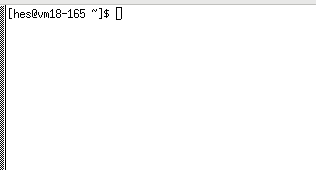

You've gone through the Get Set Up page and now should have this web page and the window to the remote Linux computer both visible on your screen. A bit of overlap is ok, but you need to be able to read the instructions on this page and see the remote computer window as you type in commands and watch the results. Please don't cut and paste, this is learning by doing and you will get more out of actually doing!
This tutorial is divided into easy to handle chunks with alternating
audio discussions and commands shown. After you've listened to an audio
clip or read the transcript, type in the command into the window, as
directed, and check to make sure it works. If you don't execute each
command (shown in the examples below in bold face) and think about the
result (not shown - you need to execute the commands to see the results)
you won't get the full benefit. Then play the next audio or read the
next transcript. Each section has an explanatory title.
|Don't make your browser window narrower than this or you'll miss things.
→|
|
Transcript
|  |
|
Note: in Linux UPPER and lower case are considered to be different, so
use the case as shown in these examples. The keyboard key called Enter
or Return will simply be referred to as the Enter key.
[myid@vm18-165 ~]$ ls
Transcript
[myid@vm18-165 ~]$ ls -l
Transcript
[myid@vm18-165 ~]$ ls c
We'll come back to directories in a while and permissions later, but for
now we'll work on files and their contents. P.S. It's best to not have
blanks in file or directory names. (It can be done, but requires extra
effort to work with. We won't deal with that here.)
|
Three different ways of using the ls command. If you're really having trouble. Note: The ~ is twiddle/tilde symbol which was mentioned. |
|
Let's look at creating and editing text files.
[myid@vm18-165 ~]$ nano nexample
Transcript
[myid@vm18-165 ~]$ ls
[myid@vm18-165 ~]$ nano nexample
|
GNU nano 2.3.1 File: nexample
[This is what the nano window looks like when
entering the nexample file, except that this
doesn't show the black highlighting. The ^
indicates holding down the Ctrl key. To scroll
through a file longer than your nano window
use the up and down arrow keys.]
^G Get Help ^O WriteOut ^R Read File ^Y Prev Page ^K Cut Text ^C Cur Pos
^X Exit ^J Justify ^W Where Is ^V Next Page ^U UnCut Text^T To Spell
For more on nano, a tutorial. |
|
Transcript
[myid@vm18-165 ~]$ cat nexample
[myid@vm18-165 ~]$ less nexample
(For less: space bar → next page; b → previous page;
and q → exit.)(For cat, less, head and tail: Ctrl-C i.e. hold down control and press C, will exit.) [myid@vm18-165 ~]$ head nexample
[myid@vm18-165 ~]$ tail nexample
Transcript
[myid@vm18-165 ~]$ cat a
Transcript
[myid@vm18-165 ~]$ cat nexample a
Transcript
[myid@vm18-165 ~]$ cat nexample a > merged-file
And then use cat to see what's in the file merged-file. It will show
the contents of nexample followed by the contents of a.Using >> instead of > will add the output to the the end of an existing file given after the >>, instead of putting the output in a new file. (Be careful, if you put an existing file's name after >, the file will be replaced - with no warning given.) |
If you're really having trouble. |
What's Next, near the bottom of this page, discusses local/remote file transfer.
A small time-saving tip: The up arrow key on the keyboard will scroll up to show past commands which can be executed or modified and then executed. The down arrow key will scroll down.
As with less: space bar → next page; b → previous page;
and q → exit.)
|
Transcript
[myid@vm18-165 ~]$ pwd
Transcript
[myid@vm18-165 ~]$ cd /home
[myid@vm18-165 home]$ pwd
[myid@vm18-165 home]$ ls
Transcript
[myid@vm18-165 home]$ cd
Transcript
[myid@vm18-165 ~]$ cd ..
[myid@vm18-165 home]$ cd
Transcript
[myid@vm18-165 ~]$ mkdir mynewdir
[myid@vm18-165 ~]$ ls
Transcript
[myid@vm18-165 ~]$ rmdir mynewdir
[myid@vm18-165 ~]$ ls
|
For a more visual display of the tree structure. |
Transferring Files between local and remote
computers This will be needed for serious projects, and so will
File Permissions when you are running your own
programs or working with others.
Some more useful commands and Linux functionality
Next, using a good quality online Linux tutorial would be a good idea. They generally are aimed at readers who have gone through the basics and want to learn more. For example, one which is aimed at NC State HPC users, another which is a "textbook" for NC State people as it assumes one is using the AFS file system (see the Chapters on Basic and Advanced UNIX COMMANDS), and then one for the general Linux environment. This is a pretty comprehensive guide to starting to use the Linux terminal. Another one only uses a local computer and explains how to install the necessary software into a Windows computer (the Mac already has what's needed.) If you go this route, and/or can't use the VCL, this details how to set up the Glide environment.
Scripting can be extremely useful when one gets into production work. Typing in a sequence of many commands, often with many options, is tedious and error prone. But a full treatment of this is beyond the scope of our Easy Glide. A short motivational discussion on command line commands and scripting is at Five reasons why researchers should learn to love the command line. Luckily there are a number of extended tutorials, such as Linux bash scripts from the Finish CSC - IT Center for Science, this from Guru99 and this from GeeksforGeeks. A free eBook also covers this area.